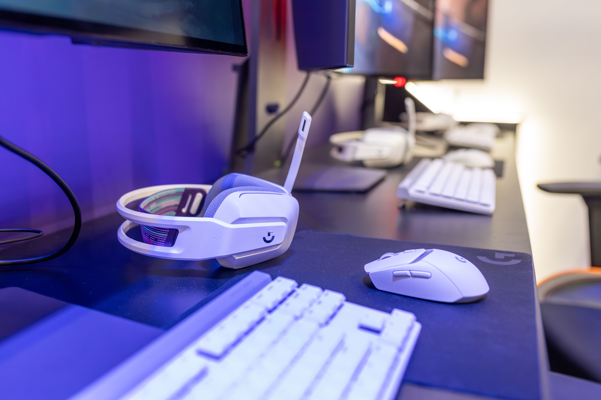

About Me

Hello, my full name is Ayan Felipe Echemendia-Carranza. I am currently a college student studying computer programming and developing my skills in software development and web development. I enjoy learning how technology works and gaining practical experience by creating programs and websites. My goal is to continue improving my technical skills while building a professional portfolio that represents the work I accomplish during college.
Technology has become an important part of my education because it gives me opportunities to solve problems creatively and develop useful applications. Through my coursework, I have been learning programming languages such as Java and Python as well as HTML and other technologies used to create websites. I am especially interested in gaining more experience with programming, databases, and web development as I continue my education.

Outside of school, I enjoy playing video games and spending time relaxing. Video games have also influenced my interest in computers because they have encouraged me to become curious about how software, graphics, and interactive applications are created. I hope to use my education and personal interests to build a career in the technology field.
Education

I am currently working toward a Computer Programmer Certificate. My classes are helping me develop a foundation in programming, computer applications, and web development. This semester, I am taking courses including COP2805, CGS1543, and CGS2820.
My current focus is completing my coursework successfully while developing skills that I can eventually use in a professional environment. Each programming assignment gives me an opportunity to practice writing code, finding errors, solving problems, and understanding how different parts of a computer program work together.
Visit the State College of Florida website to learn more about the college and its programs.
My Goals
One of my main goals is to become a capable and dependable computer programmer. I want to continue improving my knowledge of programming languages, databases, web development, and software development practices. Building projects throughout college will help me create a portfolio that demonstrates my abilities to future employers.
I also want to develop professional skills such as communication, organization, problem solving, and attention to detail. My long-term goal is to use the education and experience I gain in college to pursue opportunities in the technology industry.
My goal is to keep learning, keep improving, and build a professional future in technology.